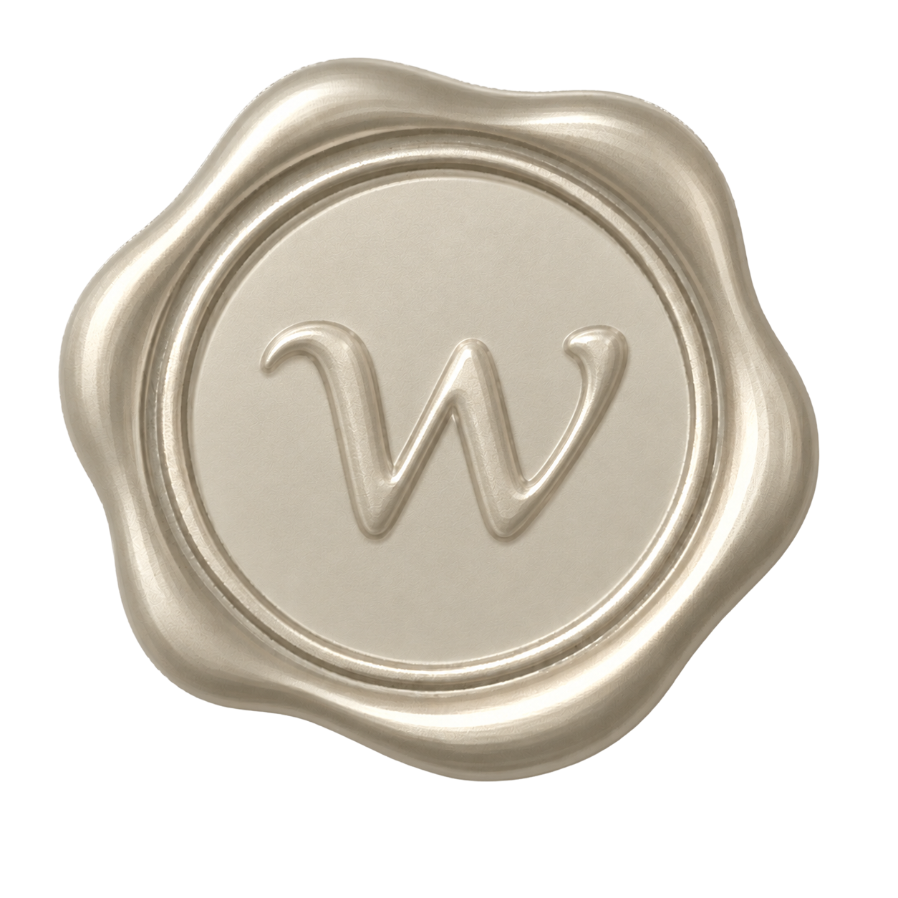
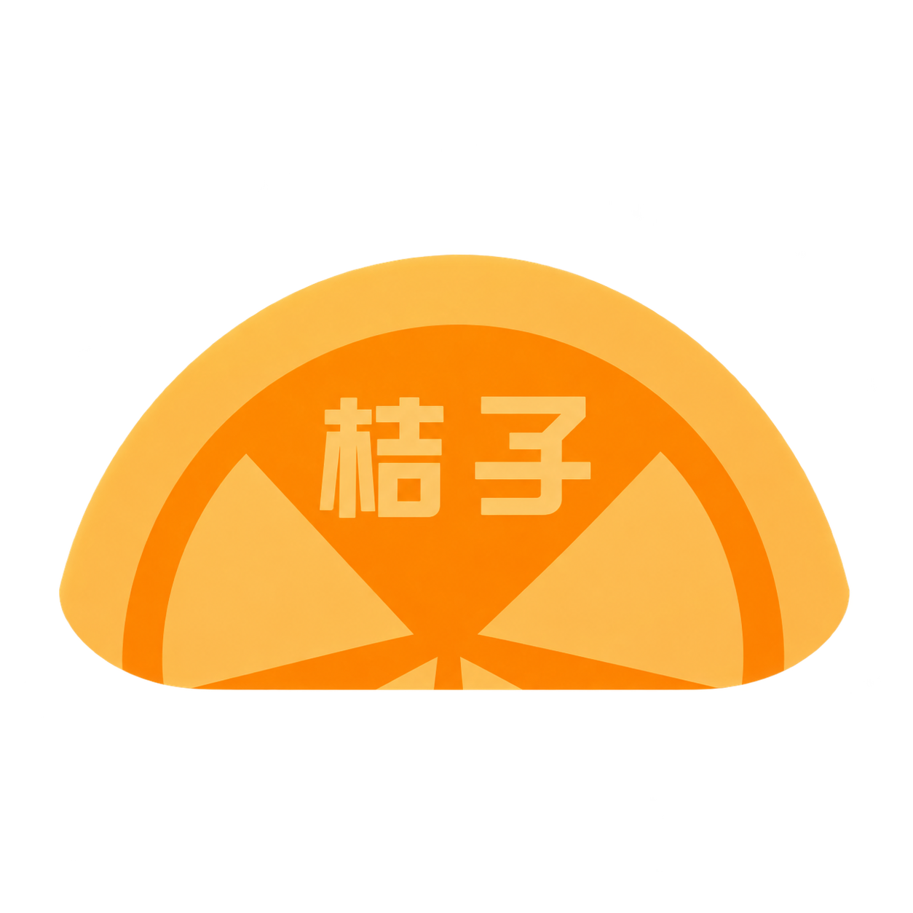
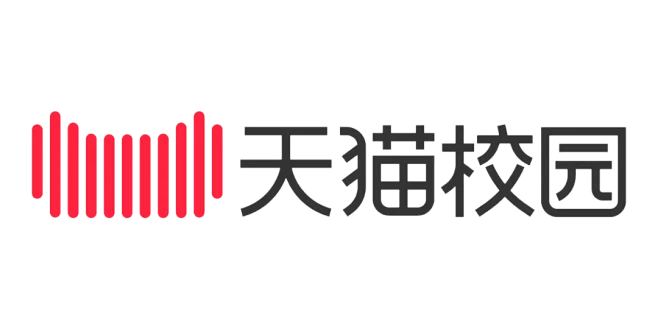
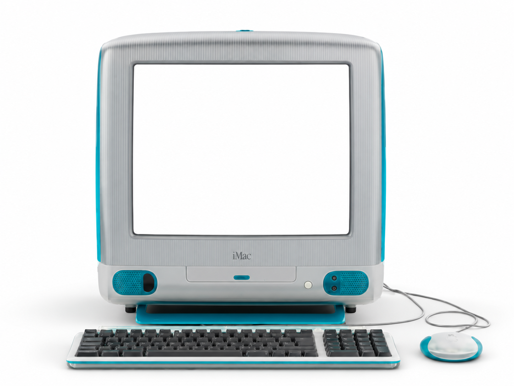
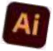
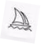

FigmaFigJam
王增增

UI / UX · Visual Design · AIGC
Prev.  
偶尔也写点代码，把 Figma 里的东西送进浏览器。

关于我

EDUCATION / 教育经历
集美大学诚毅学院
2022.09 — 2026.06数字媒体技术
- 第 12 届未来设计师 · 福建赛区省级一等奖
- 第 18 届中国好创意 · 福建赛区省级二等奖
PROFILE / 个人概述
具备多类型设计项目实践经验，参与过品牌视觉、活动设计、网页界面及 AIGC 相关项目。
持续关注设计与 AI 工具的结合，探索更高效、清晰的设计表达与落地方式。
02 / CORE CAPABILITIES
核心能力
MY DESIGN TOOLKIT四种工作方式，组成我的日常工具台。点击文件夹查看常用工具。
Photoshop

IllustratorGeminiNano Banana

MidjourneyVS CodeGitHub
03 / EXPERIENCE
工作经历
CLICK TO FLIP
05 / BEYOND DESIGN
工作之外，生活之中。
SCROLL TO EXPLORE美食、娃娃、旅行，还有小动物。四张卡片沿着页面逐渐叠放。
美食
好好吃饭，也是认真生活。
娃娃
收集一些让人开心的小可爱。
旅行
换个地方，看看不同的风景。
在陌生的街道和不同的光线里，记录值得回看的瞬间。
小动物
和毛茸茸的朋友待一会儿。
照片可拖动摆放
06 / CONTACT
联系我
LET'S TALKHELLO AGAIN
聊聊设计，
也聊聊新的机会。
如果你对我的项目或合作感兴趣，欢迎发来消息。
- 姓名
- 王增增 · Wang Zengzeng
- 3367506893@qq.com
- Phone
- 135 8530 6287
从问题出发，把想法变成清晰、可用、也值得回看的体验。
我会继续探索设计与技术相遇的更多可能。
回到首页 ↑